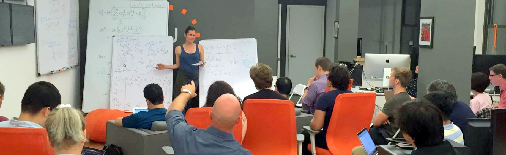

teaching
Centre for Environmental and Resource Economics; Swedish University of Agricultural Sciences; Weeklong PhD Course on Machine Learning for Causal Inference (W/Cal Poly, Economics 552 Causal Inference for Machine Learning and , Spring 2022 - present.
Cal Poly, Economics 580 Special Projects joint with the World Bank, Spring 2021 - present.
Cal Poly, Economics 395 Programming for Economics and Analytics, Spring 2017 - present. Thanks to DataCamp for supplementary exercises.
Cal Poly, Economics 201 Survey of Economics, Winter 2017 - present
Columbia University, Earth Institute, Co-Instructor (with Joel Cohen and Jason Wong), SDEV W2300-Challenges of Sustainable Development, Spring 2016
U.S. Naval Academy, Annapolis, MD, Intermediate Statistics, Spring 2011
guest lectures
Columbia University, Statistics Department, Guest Lecturer, W4242-Introduction to Data Science (Instructors: Rachel Schutt and Kayur Patel), November 2013assistant teaching
University of Maryland, College Park, Graduate Teaching Assistant, AREC620-Dynamic Programming and Optimization (Required First Year PhDs), Fall 2008University of Maryland, College Park, Lab and Grading, ECON200-Microeconomics (Undergraduate Microeconomics), Spring 2007
additional teaching
Statistics.com, An Introduction to Queries and Data Munging in PostgreSQL and R, Fall-Spring 2013Girls Who Code, Instructor, Programming in Python, Summer 2016
Python Workshops: Network Analysis, Webscraping & APIs, Data Mining
workshops
May 29, 2021 Designing Data Science Course Modules @ Cal Poly, virtualNovember 19, 2019 A Little Intro to Big Data and ML @ Bolt About
November 14, 2018 Big Ill (conditioned) Data - What to Do? @ 15Five @ Fueled Collective
May 21, 2017 Making Big Data a Little Bit Smaller @ Pycon 2017
May 21, 2017 Monitoring Your Plants With Raspberry Pi @ Pycon 2017
March 25, 2017 Big Ill (conditioned) Data - What to Do? @ 15Five @ Fueled Collective
December 17, 2016 Not so Fast, Under the Hood of Apps in Flask, Tutorial @ Chart Beat, Part I & II, III
November 14, 2016 Transitioning to Coding @ HighTower
September 7, 2016 Deep Learning Session, Part II: The Backpropogation Algorithm @ Untapt 
July 13, 2016 Data Science in Python @ Metis, Part II
April 5th, 2016 Data Science in Python @ Metis
January 28th, 2016 Flask and Git @ StackOverflow
February 21st, 2015 Networkx in Python @ Columbia
September 23, 2014 Pystan @ Columbia
May 13, 2014 Webscraping in Python @ Columbia
April 28, 2014 Python for Beginngers @ Spotify: Part II
March 27, 2014 Python for Beginners @ Tipping Point: Part I
=